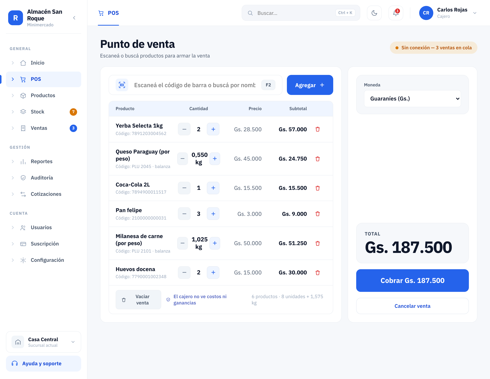

JOB RYGUASUUSER E.CHYRNIATIPO PROYECTO PERSONAL · SAAS MULTI-TENANTFECHA 2026-07-21
Ryguasu
Ryguasu ("gallina" en Guaraní) es un sistema de inventario, ventas y caja para el comercio chico de Paraguay: el minimercado, la despensa, la carnicería del barrio. Todos los negocios comparten un backend y una base de datos, y eso obliga a tomarse el aislamiento en serio. En esta página no listo features: respondo las preguntas que yo le haría a un sistema que guarda la plata de otra gente.
Rol · Backend e infraestructura
Diseñé el modelo de datos y la arquitectura, escribí el backend, el aislamiento entre negocios y los backups cifrados, y me encargo de los deploys y de verificar que producción siga sana. El frontend y el diseño visual son de mis compañeros, construidos sobre mis contratos de API.
Backend en producción
62 endpoints|36 tablas · 25 bajo RLS|170+ tests de backend|49 decisiones documentadas
RYGUASU.PRTHOJA 00 · EL PRODUCTOGREENBAR · 132 COL
00Primero, el producto
Un minimercado acá lleva el inventario en papel o en una planilla: nadie sabe cuánto costó de verdad lo que está en góndola, los precios se mueven con el dólar y la caja no deja historia que se pueda revisar. Ryguasu es una suscripción por sucursal con 14 días de prueba: el negocio carga sus productos — códigos de fábrica, códigos internos o PLU de balanza — y vende desde un POS web que aguanta quedarse sin internet.
El backend hace la parte aburrida y difícil: recalcula el costo promedio ponderado en cada compra, congela precio, costo y nombre en cada línea de venta, y maneja Guaraní como base con ARS/USD/BRL a la tasa de cada negocio. El tenant de demostración lleva 4.551 ventas en 183 días, cuadradas contra sus propios reportes.

ADJUNTO A · POS en uso, venta en cursoclick para ampliar
Ticket con productos por código y por peso (balanza), total en Gs. — y arriba a la derecha, "Sin conexión — 3 ventas en cola": la caja sigue vendiendo sin internet.
ADJUNTO A · RYGUASU.PRT · POS venta rápida, Almacén San Roqueclick para cerrar
RYGUASU.PRTFICHAS 01–07 · AMENAZA / DEFENSAGREENBAR · 132 COL
Siete maneras de romperlo
A un sistema así no se lo juzga por los días en que todo anda bien. Armé estas fichas con las preguntas incómodas — las que me haría un entrevistador, o la realidad — y cada una responde con la amenaza, la defensa que existe hoy y cómo se probó. Los errores del camino también están contados, tal cual pasaron.
FICHA 01/07
¿Y si un negocio consulta los datos de otro?
AmenazaDefensa probada
Un bug en una query, o un job nocturno que olvidó su tenant, devuelve el inventario y las ventas de todos los negocios. Con esquema compartido este accidente no avisa: todo funciona, hasta que un cliente ve datos que no son suyos.
Dos capas independientes: la aplicación resuelve el tenant en cada request, y debajo Row Level Security de PostgreSQL con políticas FORCE y un rol sin BYPASSRLS. Sin contexto, la base devuelve cero filas — nunca las de otro.
SELECT * FROM products — sesión del tenant «Almacén San Roque»
códigoproductostockprecio Gs.
7891000100Yerba Selecta 1kg3428.500
INT-000041Queso Paraguay (kg)6.4252.000
2000015004PLU 15 · Milanesa (balanza)3.8061.900
154 filas · solo su negocio, siempre
0 filas
Falla visible — nunca una fuga silenciosa
Los jobs de fondo deben fijar un contexto centinela explícito, o no leen nada.
Verificado · 42/42 en 403Verificación — una suite se autentica como el negocio A y pega a los 42 endpoints con identificadores del negocio B. Mi parte: las dos capas. Activé RLS cuando el esquema tenía 6 tablas; meterlo después, con 25, hubiera sido mucho peor.
FICHA 02/07
¿Y si dos cajas venden la última unidad al mismo tiempo?
AmenazaDefensa probada
Dos ventas leen stock = 1 al mismo tiempo, las dos pasan, el stock queda en −1 y después nadie sabe cuál es el costo promedio verdadero.
SELECT … FOR UPDATE sobre producto y saldo, siempre en el mismo orden — las ventas concurrentes serializan sin deadlocks. Toda mutación de dinero o stock exige un Idempotency-Key.
v1 · check-then-insert ……… carrera real de 2 hilos → 500s [FAIL]
v2 · INSERT … ON CONFLICT DO NOTHING … mismo test de carrera → 1 venta, 0 errores [ OK ]
1 venta · 0 erroresVerificación — test de carrera con dos hilos contra un Postgres real (Testcontainers). Mi parte: la primera versión devolvía 500 bajo carrera; la reescribí y dejé ese mismo test como regresión permanente.
FICHA 03/07
¿Y si se corta internet a mitad del turno?
AmenazaDefensa probada
La caja deja de vender — o peor: vende, y esas ventas se pierden antes de llegar al servidor. Y acá los cortes de internet o de luz pasan nomás; no son un escenario de libro.
POS offline-first con outbox local: las ventas se encolan y sincronizan al volver la conexión. Cada dispositivo porta una licencia JWT firmada por el backend con su tenant y una ventana de gracia según el estado de la suscripción — la identidad sale de la firma, jamás del input del cliente.
venta local→outbox→sync firmado→sync_conflictUn conflicto de stock jamás produce stock negativo: queda marcado y espera resolución manual por endpoint dedicado. Una venta encolada nunca se pierde por ventana vencida.
Ninguna venta perdidaVerificación — suite de sincronización: replay idempotente, conflictos inyectados, licencias vencidas dentro y fuera de gracia. Mi parte: el protocolo de sync, las licencias firmadas y la política de conflictos.
FICHA 04/07
¿Y si el dólar cambia después de la venta?
AmenazaDefensa probada
Si la historia se recalcula con la tasa o el precio nuevo, los márgenes y reportes viejos dejan de cerrar. Y un cliente con malas intenciones podría mandar su propio total.
El cliente envía solo productId y quantity. El servidor calcula y congela por línea precio, costo, nombre y tasa de cambio al instante de la venta, en numeric(19,4) — nunca punto flotante. Cambiar un precio hoy jamás reescribe el pasado.
Historia inmutableVerificación — los reportes del tenant demo (183 días, 4.551 ventas) cierran contra las líneas congeladas. Mi parte: toda la plata se calcula en el servidor; el cliente nunca manda montos.
FICHA 05/07
¿Y si arranca con secrets por defecto?
AmenazaDefensa probada
Un deploy apurado con credenciales de ejemplo: el sistema levanta, funciona, y queda abierto a cualquiera que haya leído el repositorio.
Un guard de arranque aborta el boot ante secrets default o ausentes — antes de que corran las migraciones. Nació de una auditoría de seguridad independiente: 7 hallazgos, cada uno probado ejecutando el ataque, cada uno cerrado. Además: gitleaks sobre el historial completo en cada push.
7/7 hallazgos cerradosVerificación — cada hallazgo se cerró ejecutando de nuevo el ataque, no marcando una planilla. Mi parte: el guard de arranque y el cierre de los 7.
FICHA 06/07
¿Y si el servidor muere esta noche?
AmenazaDefensa probada
Perder días de ventas de decenas de negocios. Trabajo con una regla vieja del oficio: un backup que no se probó no es un backup. Llegar a uno de verdad me tomó cuatro iteraciones, y están documentadas.
Job nocturno: volcado → compresión → cifrado age con clave pública (la privada nunca toca el servidor) → R2, con checksums registrados en base. El dump se completa o grita: nunca queda filtrado en silencio.
v1 · pg_dump vs RLS forzado …… producción lo rechazó (local pasó: era superuser) [FAIL]
v2 · toggle + trap garantizado … re-fuerza RLS incluso ante fallo · probado con kill −9 [ OK ]
harness local del subsistema …… 37/37 escenarios, con fallos inyectados y restore a S3 local [ OK ]
Se completa o gritaVerificación — el [FAIL] de la v1 me dejó una lección anotada: probar con los privilegios de producción, no con los míos de desarrollador. Mi parte: todo el pipeline, del cron al cifrado.
FICHA 07/07
¿Y si el backup nunca corrió — y nadie lo notó?
AmenazaDefensa probada
Lo que más miedo da no es que el backup falle: es que deje de correr y nadie se entere. La máquina murió antes de avisar, y el "backup diario" lleva tres semanas sin existir.
Dead man's switch (Healthchecks.io): el job hace ping al terminar bien y al terminar mal — y la ausencia de ping es la alarma. El caso "murió antes de avisar" está cubierto por diseño.
Simulacro de restore · 2026-07-17 · desde R2, en frío
El simulacro además expuso que los dumps no incluían sus FORCE — ahora cada dump se los agrega solo: el restore es autocontenido por construcción.
Restore probado · 25/25Verificación — descargado, checksum verificado, descifrado y restaurado sobre un Postgres limpio. Mi parte: el switch, el drill y la corrección que dejó.
RYGUASU.PRTHOJA · CÓMO SE CONSTRUYEGREENBAR · 132 COL
Por qué esas defensas existen
Nada de lo de arriba salió de una noche inspirada. Salió de trabajar con specs escritas, decisiones anotadas con su porqué, y una regla fija: nada llega a producción sin que un humano lo apruebe.
Spec-driven development · 35 specsTrabajo con SDD: cada parte del sistema se especifica antes de codearse, y esas 35 specs son la fuente de verdad. La API escrita manda — un endpoint que se desvía actualiza el contrato en el mismo commit. Si dos specs se contradicen, lo escalo; no lo resuelvo por mi cuenta en silencio.
49 decisiones con su porquéRegistros estilo ADR: fecha, estado, razonamiento, y quién las supera si cambian. Investigar antes de codear: las unidades bonificadas ("12+1") se resolvieron leyendo IAS 2 — cero código cambiado, un documento escrito.
El CI vio lo que mi máquina noGitHub Actions corre los tests con Testcontainers contra un Postgres real. Los runners de Linux agarraron un bug de precisión de timestamps que en macOS no se reproducía nunca — habría explotado recién en producción. Revisando el resto del código aparecieron 4 casos más del mismo problema.
Humano en el loopEl proyecto se desarrolla con asistencia de IA, con una condición que no se negocia: ningún push, merge ni deploy sale sin mi confirmación. Toda la infraestructura cuesta unos 50 dólares al mes.
RYGUASU.PRTHOJA · ESTADO DEL PROYECTOGREENBAR · 132 COL
Qué está hecho, qué está escrito, qué falta
Prefiero separar lo que ya corre en producción de lo que está escrito y todavía no migré. Mezclar las dos cosas sería venderte algo que no existe.
[x] Implementado y verificado
· RLS en 25 tablas · 42/42 adversarial
· Idempotencia y locks bajo carrera real
· Backups cifrados + restore drill 25/25
· Offline sync con licencias firmadas
· Multi-moneda con tasas congeladas
· Pago manual de suscripciones (Fase 9)
· Defensa del registro abierto: rate-limit por IP, purga de trials a 30 días
[~] Especificado, migraciones pendientes
· Billing con precios versionados y snapshots de pago (DEC-032/033/035/037)
· Zero Trust sobre el panel staff — la app separada existe; el deploy tras Access está pendiente de verificación
· Venta por peso completa: PLU y códigos de balanza (spec 15)
[ ] Futuro, escrito como regla
· Staging separado antes de tocar producción con el primer cliente pago — regla dura, no buena intención
· Demo pública con tenant sembrado
· Acceso para agentes IA vía MCP (spec 19)
RYGUASU.PRTHOJA · INVENTARIO TÉCNICOGREENBAR · 132 COL